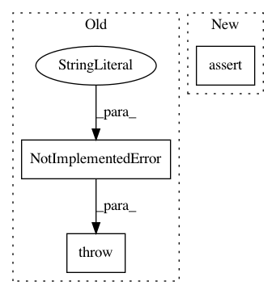

fdf356a91622033dc8e88ccf64c2f421e9d3a8a8,pycox/cox.py,CoxTime,predict_cumulative_hazard_at_times,#CoxTime#,833
Before Change
return np.exp(-self.predict_cumulative_hazard(df, baseline_hazard_, batch_size, verbose))
def predict_cumulative_hazard_at_times(self, times, df, batch_size=512, return_df=True):
raise NotImplementedError("This isn"t as relevant when we have broken the propotionality.")
def concordance_index(self, df, g_preds=None, batch_size=256):
raise NotImplementedError()
After Change
Pandas dataframe (or numpy matrix) [len(times), len(df)] with cumulative hazard
estimates.
"""
assert hasattr(self, "baseline_hazard_"), "Need to fit model first."
if not hasattr(times, "__iter__"):
times = [times]
cum_haz = self.predict_cumulative_hazard(df, baseline_hazard_, batch_size, verbose)
times_idx = search_sorted_idx(cum_haz.index.values, times)
In pattern: SUPERPATTERN
Frequency: 3
Non-data size: 3
Instances
Project Name: havakv/pycox
Commit Name: fdf356a91622033dc8e88ccf64c2f421e9d3a8a8
Time: 2018-02-27
Author: kvamme@samba8.ad.nr.no
File Name: pycox/cox.py
Class Name: CoxTime
Method Name: predict_cumulative_hazard_at_times
Project Name: DistrictDataLabs/yellowbrick
Commit Name: d364facfdecaf5874b85bca3f7f0b2832e3483a2
Time: 2018-06-18
Author: benjamin@bengfort.com
File Name: tests/test_regressor/test_residuals.py
Class Name: TestPredictionError
Method Name: test_peplot_shared_limits
Project Name: SPFlow/SPFlow
Commit Name: a94dbd2936fdc64e921333c04e0d66d491efc706
Time: 2018-11-19
Author: claas@voelcker.net
File Name: src/spn/algorithms/stats/Moments.py
Class Name:
Method Name: Moment